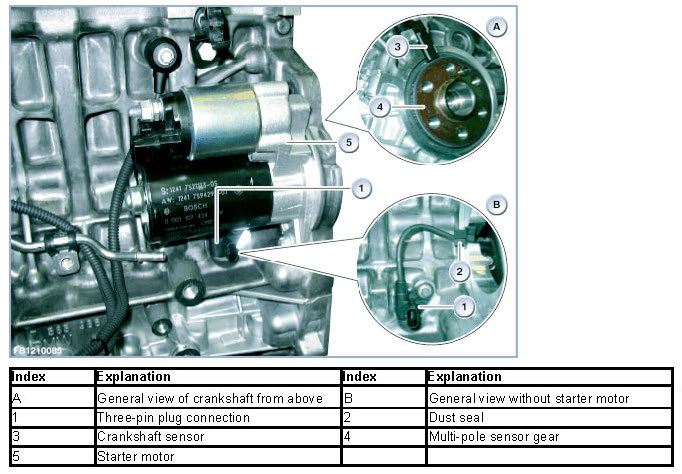
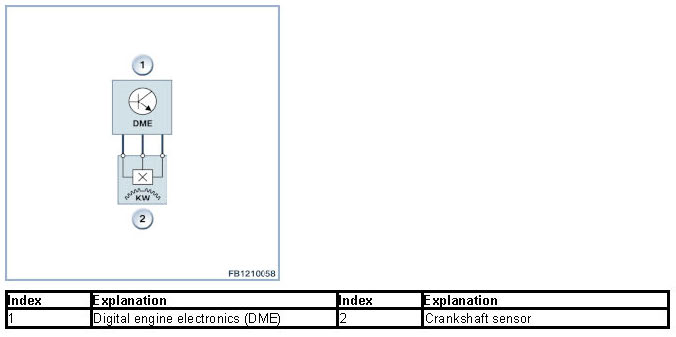

Misfire Detection
Misfire Detection
Misfire detection
The Digital Motor Electronics (DME) detect misfiring.
The misfire detection system records the engine speed and can therefore detect poor combustion in a particular cylinder. The operational smoothness values of the individual cylinders are displayed for troubleshooting purposes. The engine must be operated in idle for at least 3 minutes in order to obtain reliable values. The idle smoothness is evaluated exclusively with the engine in idle (cold or warm). If the combustion in one cylinder is poor, this is detected. Random fluctuations of the operational smoothness value of an individual cylinder can be detected by observing it closely. If combustion in the engine is theoretically even, the operational smoothness values will be 0 (averaged over all cylinders).
Increased operational smoothness values may be attributable, for example, to one of the following causes:
- Misfiring
- Extraneous air
- Mixture deviations
- Faults in fuel supply
- Insufficient compression pressure.
It is therefore not possible to define precise control limits. The engine speed is measured at the increment wheel assisted by the crankshaft sensor. The operational smoothness of the engine (misfire detection) is also monitored in addition to engine speed recording. In order to detect misfiring, the increment wheel in the Digital Motor Electronics (DME) is divided into segments based on the firing interval (between 2 ignition processes). The period duration of each segment is measured in the Digital Motor Electronics (DME) and statistically evaluated. The maximum permissible values for irregular operation are stored (as function of engine speed, load and coolant temperature) for each mapped value. If these values are exceeded for a specific number of combustion cycles, a fault entry is stored for each faulty cylinder detected.
The following graphic shows the engine N55 as example.

NOTICE: Separate functional description.
There is a separate functional description for the engine speed recording.
System overview

System functions
The following system functions are described:
- Rough road detection.
Rough road detection
The rough road detection identifies rough track driving on poor road surfaces (driving over stones, rubble/debris or potholes) based on the information on acceleration of the wheels obtained. If a rough section of road is detected, a fault is stored and the misfire detection is briefly suppressed. This is necessary as the vibrations in the drive train caused by poor road surfaces can lead to erroneous misfire detection. Conversely, it is also possible that the rough road detection comes into effect too late (once misfiring has already been erroneously detected). in which case incorrectly diagnosed misfiring is identified with the assistance of the rough road detection.
We can assume no liability for printing errors or inaccuracies in this document and reserve the right to introduce technical modifications at any time.